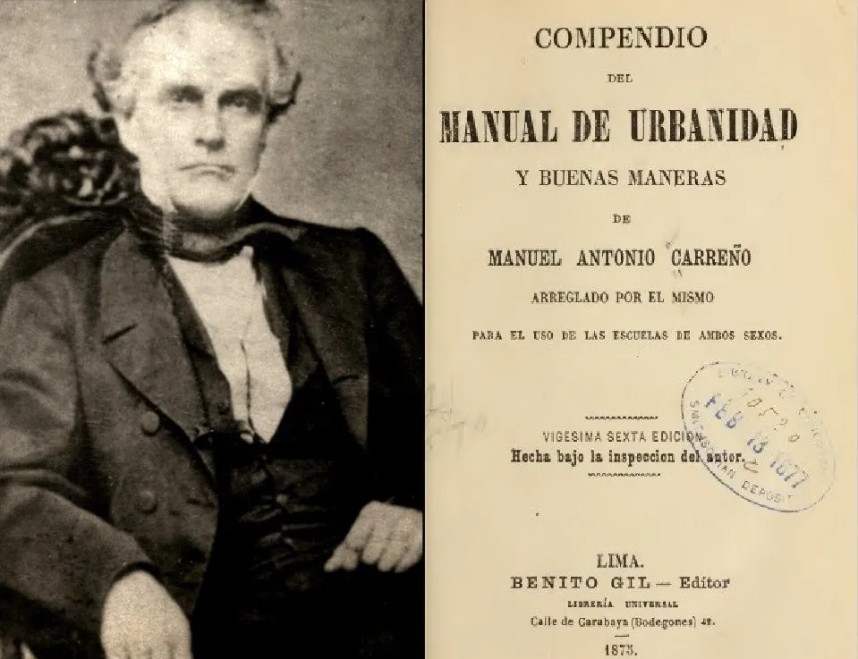

Manual de Carreño

Apesar de que El Manual de Carreño o también conocido como “Manual de Urbanidad y Buenas Maneras” tiene aproximadamente 200 años, sigue siendo utilizado como referente para buenos modales en la mayoría de los países hispanohablantes. Este libro publicado en 1853 por el pedagogo venezolano Manuel Antonio Carreño en el que se desarrollan en forma de manual pautas o normas a seguir para comportarse de forma correcta en la sociedad y convivir de una mejor manera con las personas de nuestro entorno.
El manual está dividido en dos partes principales: “Deberes morales del hombre” y “Urbanidad”. En estos se listan una serie de capítulos donde se tocan situaciones y contextos específicos, para así establecer el comportamiento adecuado en estos con unas normas propuestas.
En “Deberes morales del hombre” se tocan temas en los capítulos como deberes para con dios donde se tocan temas de hábitos religiosos, deberes para con la sociedad donde se habla de respeto hacia las figuras paternas y apreciación a las mismas como también a la patria al sentido del patrimonio, deberes con nosotros mismos donde se reflejan costumbres de respeto, apreciación y responsabilidad para ser implementado con nosotros mismos y nuestros semejantes.
En la segunda parte, “Urbanidad”, Principios generales correspondiente a las reglas que seguir dentro de una urbanidad para una convivencia sana entre los pertenecientes a esta, “Del aseo” de acuerdo al aseo con nosotros mismos, al aseo de nuestra vestimenta, aseo de nuestras habitaciones y el aseo con los demás.
“Del modo de conducirnos dentro de casa”, donde se tocan temas del método considerado como parte de la buena educación que toca temas de cómo lidiar el desorden en la vida doméstica, del acto de acostarnos y nuestros deberes durante la noche del acto de levantarnos, de la vestimenta que debemos llevar dentro de casa, el arreglo de la casa, la paz doméstica, de la manera de conducirnos con nuestra familia y con nuestros vecinos, cómo también el comportamiento cuando estamos en casa ajena.
“Del modo de conducirnos en diferentes lugares fuera de casa”, que habla de temas de cómo comportarse al salir de casa en lugares como en la calle, en templos religiosos, recintos educativos y colegiados.
Hay ciertas citas en el libro que están sugeridas de manera formal como las siguientes:
«No es lícito a un caballero invitar a bailar a una señora con quien no se tenga amistad».
«Jamás empleemos los dedos para limpiarnos los ojos, los oídos, los dientes, ni mucho menos las narices. La persona que lo hace excita un asco invencible en los demás».
«Las atenciones que debemos a los demás no pueden usarse de manera igual con todos. La urbanidad estima en mucho las categorías establecidas por la naturaleza, la sociedad y Dios: así es que obliga a dar preferencia a unas personas sobre otras».
«El aplauso en las comedias debe ser corto y en las tragedias más largo».
«La persona invitada a una cena o un cóctel debería presentarse con un regalo o algún detalle».
«Se debe prestar atención a quién habla y no se debe tomar puntos de vista muy extremos sobre política, sexo o religión».
«Debe aprender a recibir cumplidos modestamente y sin rechazarlos nunca».
«Nuestra conducta en sociedad no será nunca otra cosa que una copia en mayor escala de nuestras costumbres domésticas».
Ya que comprende un poco de cada uno de los ámbitos sociales y costumbres que se ven involucrados en la vida cotidiana, que no solo facilitan el día a día si no que mejoran la calidad de vida y las relaciones de las personas que las emplean es importante que estas sean conocidas y en lo posible puestas en práctica.
Palomino, A. (2020, Obctubre 9). 15 reglas de etiqueta que el Manual de Carreño que todo caballero o dama debe conocer. https://culturacolectiva.com/letras/reglas-de-etiqueta-que-el-manual-de-carreno/ Villacorte, A. (s.f.). Resumen Por Capítulos Del Manual De Carreño. https://en.calameo.com/read/0060514527f41cf47d643
Declaración Universal de los Derechos Humanos (NU)
La Declaración Universal de los Derechos Humanos fue proclamada por la Asamblea General de la Naciones Unidas (ONU) el 10 de diciembre de 1948 en París. Fue un hito histórico, ya que, por primera vez en la historia, se establecieron una serie de derechos fundamentales que todo ser humano, solo por el hecho de serlo, puede y debe aspirar a conseguir. Es un “ideal común para todos los pueblos y naciones”. Persigue, en fin, la posibilidad de felicidad y justicia para todas las personas.
Como en su preámbulo describe:
En tanto que el reconocimiento de la dignidad intrínseca y de los derechos iguales e inalienables de todos los miembros de la familia humana es el fundamento de la libertad, la justicia y la paz en el mundo,A continuacion se listan los Articulos de la declaración
En tanto que el desconocimiento y el menosprecio de los derechos humanos han originado actos de barbarie ultrajantes para la conciencia de la humanidad, y el advenimiento de un mundo en que los seres humanos disfruten de la libertad de expresión y de creencias y la libertad del temor y de que se ha proclamado como la aspiración más elevada de la gente común,
En tanto que es esencial, si el hombre no debe ser obligado a recurrir, en última instancia, a la rebelión contra la tiranía y la opresión, que los derechos humanos sean protegidos por el ejercicio de la ley,
En tanto que es esencial para promover el desarrollo de relaciones amistosas entre las naciones,
Considerando que los pueblos de las Naciones Unidas han reafirmado en la Carta su fe en los derechos humanos fundamentales, en la dignidad y el valor de la persona humana y en la igualdad de derechos de hombres y mujeres y que han decidido promover el progreso social y a elevar el nivel de vida con mayor libertad,
En tanto que los Estados Miembros se han comprometido a asegurar, en cooperación con las Naciones Unidas, la promoción del respeto universal y la observancia de los derechos humanos y las libertades fundamentales,
En tanto que una concepción común de estos derechos y libertades es de la mayor importancia para el pleno cumplimiento de dicho compromiso,
Ahora, por lo tanto,
La Asamblea General,
Proclama la presente Declaración Universal de los Derechos Humanos como ideal común por el que todos los pueblos y naciones deben esforzarse, a fin de que tanto los individuos como las instituciones, inspirándose constantemente en ella, promuevan, mediante la enseñanza y la educación, el respeto a estos derechos y libertades, y aseguren, por medidas progresivas de carácter nacional e internacional, su reconocimiento y aplicación universales y efectivos, tanto entre los pueblos de los Estados Miembros como entre los de los territorios colocados bajo su jurisdicción.
La Declaración Universal de Derechos Humanos. Recuperado de https://www.un.org/es/about-us/universal-declaration-of-human-rights DECLARACIÓN UNIVERSAL DE LOS DERECHOS HUMANOS. Recuperado de https://www.unidosporlosderechoshumanos.mx/what-are-human-rights/universal-declaration-of-human-rights/preamble.html
El "Camino a la Felicidad" de L.Ronald Hubbard
Siendo quizás el primer código moral no religioso basado únicamente en el sentido común, El Camino a la Felicidad de L. Ronald Hubbard es un libreto que contiene 21 preceptos o principios para mejorar la moral en el mundo de hoy.
La demanda de la gente de este libreto es mundial, y sus preceptos los aplican decenas de millones de personas en todo el planeta, hombres, mujeres y niños de todos los estratos sociales, desde oficiales de la policía de Moscú a los presos con cadena perpetua de San Quintín, desde los niños de las escuelas de Zimbaue y Beverly Hills a jefes de Estado. Se aplica a la vida de cualquier persona, en cualquier parte.
También expresa los valores morales adoptados por millones de cienciólogos.
El Camino a la Felicidad es una descripción detallada de cada precepto, incluyendo cómo funciona y cómo aplicarlo en la vida. En lugar de simplemente dar un conjunto de reglas o “cosas que hay que hacer”, El Camino a la Felicidad proporciona una reflexión real y muestra cómo se puede poner en práctica cada precepto.
Los 21 preceptos son los siguientes:
- Cuídate a ti mismo
- Sé moderado
- No seas promiscuo
- Ama y ayuda a los niños
- Honra y ayuda a tus padres
- Da un buen ejemplo
- Busca vivir con la verdad
- No asesines
- No hagas nada ilegal
- Apoya a un gobierno diseñado y administrado para toda la gente
- No dañes a una persona de buena voluntad
- Protege y mejora tu medio ambiente
- No robes
- Sé digno de confianza
- Cumple con tus obligaciones
- Sé industrioso
- Sé competente
- Respeta las creencias religiosas de los demás
- Trata de no hacer a otros lo que no querrías que te hicieran a ti
- Intenta tratar a los demás como te gustaría que te trataran a ti
- Florece y prospera